The example data
timeuse, included in the package, is a simulated sample
of 300 participants. Each row holds one person’s day, divided into four
parts that sum to 1440 minutes, namely moderate-to-vigorous physical
activity (MVPA), light physical activity
(LPA), sedentary behaviour (SB) and sleep
(SPT, the sleep period time). The data also hold several
outcomes, among them the body-mass-index z-score zbmi and
the binary outcome obesity.
parts <- c("MVPA", "LPA", "SB", "SPT")
head(timeuse[c(parts, "zbmi", "obesity")])
#> # A tibble: 6 × 6
#> MVPA LPA SB SPT zbmi obesity
#> <dbl> <dbl> <dbl> <dbl> <dbl> <fct>
#> 1 36.1 320 541. 543. -1.31 yes
#> 2 14.7 214. 815. 397 -0.472 no
#> 3 195. 206. 500. 539. -1.45 no
#> 4 95.5 229. 445. 670. -2.40 no
#> 5 1.7 504. 479. 455. 2.56 no
#> 6 11.2 150. 583. 696. -0.259 no![Flowchart of the timecoda workflow. A data frame with the parts and an outcome enters declare_composition(), which returns a compD object. The compD is described with summary(), plot() and pub_ready(), and modelled as a predictor of an outcome with comp_iv(). A comp_iv() fit leads to fit_check() for diagnostics, to predict_realloc() for reallocation estimates, which are summarized with summary() and pub_ready() and drawn with plot_realloc(), and to optimal_composition() for a search of the fit for the best compositions. A second path, drawn in grey and dashed, would model the composition as the outcome with comp_dv(), described with summary() and plot(). A caption at the bottom explains that grey marks what is planned and not yet implemented.](workflow.svg)
Declare the composition
To prepare the data for analysis, declare the composition with
declare_composition(). It checks the parts, imputes any
zeroes and stores the closed composition in a compD object,
which comp_iv() takes. To describe the composition, use
summary() and plot(). To format the summary as
a publication table, use pub_ready().
cd <- declare_composition(
data = timeuse,
parts = c("MVPA", "LPA", "SB", "SPT"),
closure = 1440,
labels = c(
MVPA = "Moderate-to-vigorous PA",
LPA = "Light PA",
SB = "Sedentary behaviour",
SPT = "Sleep"
)
)
summary(object = cd)
#> <compD> compositional variable summary
#> Parts: Moderate-to-vigorous PA, Light PA, Sedentary behaviour, Sleep
#> Closure: 1440
#> Observations: 300
#>
#> Row totals (before closure): mean 1440.0 (SD 0.0), range 1440.0-1440.0
#> No zeroes detected.
#>
#> Descriptive statistics
#> geom_mean: imputed, closed composition; other columns: original data
#> # A tibble: 4 × 10
#> part label geom_mean mean sd median p25 p75 min max
#> <chr> <chr> <dbl> <dbl> <dbl> <dbl> <dbl> <dbl> <dbl> <dbl>
#> 1 MVPA Moderate-to-vigoro… 28.1 45.9 44.7 35.0 12.7 61.8 0.1 240
#> 2 LPA Light PA 235. 243. 86.9 232. 173. 308. 51.8 504.
#> 3 SB Sedentary behaviour 677. 661. 118. 669. 586. 743. 316. 1037.
#> 4 SPT Sleep 499. 491. 106. 489. 426. 559. 240. 815.
#>
#> Variation matrix
#> # A tibble: 4 × 6
#> part label MVPA LPA SB SPT
#> <chr> <chr> <dbl> <dbl> <dbl> <dbl>
#> 1 MVPA Moderate-to-vigorous PA 0 1.67 1.55 1.44
#> 2 LPA Light PA 1.67 0 0.247 0.260
#> 3 SB Sedentary behaviour 1.55 0.247 0 0.140
#> 4 SPT Sleep 1.44 0.260 0.140 0In the descriptive table, the closed geometric mean of each part comes first. Together, these means are the centre of the sample’s compositions and sum to 1440 minutes.
To format the summary as tables with the gt package for
publication, use pub_ready().
| Descriptive summary | |||
| Spread of the original data and the compositional centre per part | |||
| Part | Mean ± SD (original data) | Geometric mean (closed to 1440) | % of total |
|---|---|---|---|
| Moderate-to-vigorous PA | 45.9 ± 44.7 | 28.1 | 2.0 |
| Light PA | 242.6 ± 86.9 | 235.5 | 16.4 |
| Sedentary behaviour | 660.7 ± 117.6 | 677.2 | 47.0 |
| Sleep | 490.8 ± 106.2 | 499.2 | 34.7 |
To plot the composition, use plot(). The figure shows
the density and the boxplot of each part, one ternary panel for each set
of three parts and the variation matrix as a heatmap. Dashed crosshairs
mark the geometric mean, and the closed curve is a 95% confidence
region.
plot(x = cd)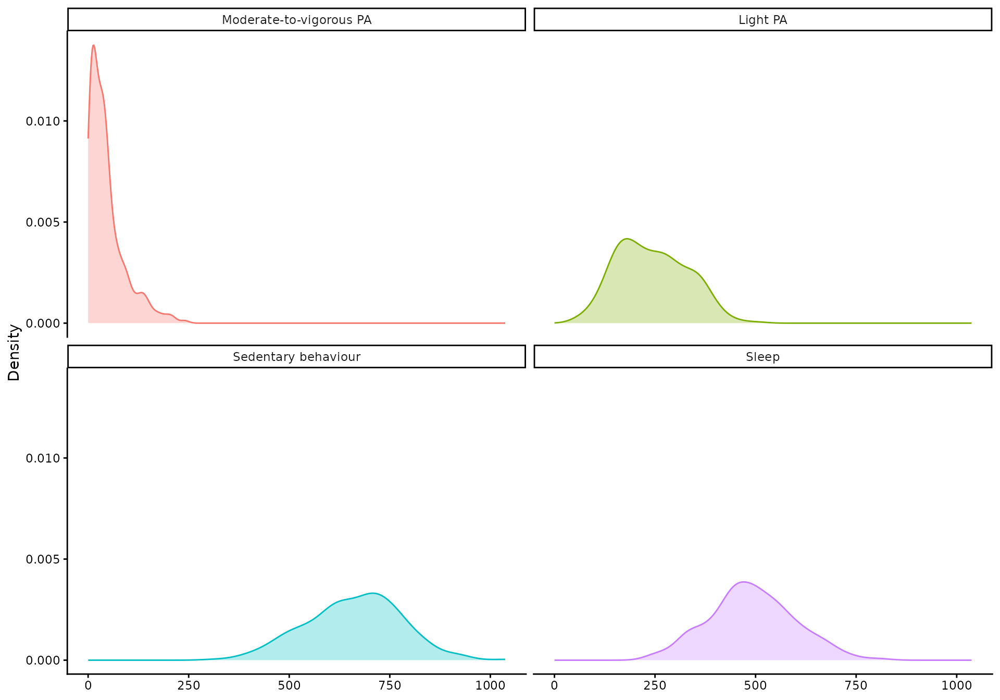
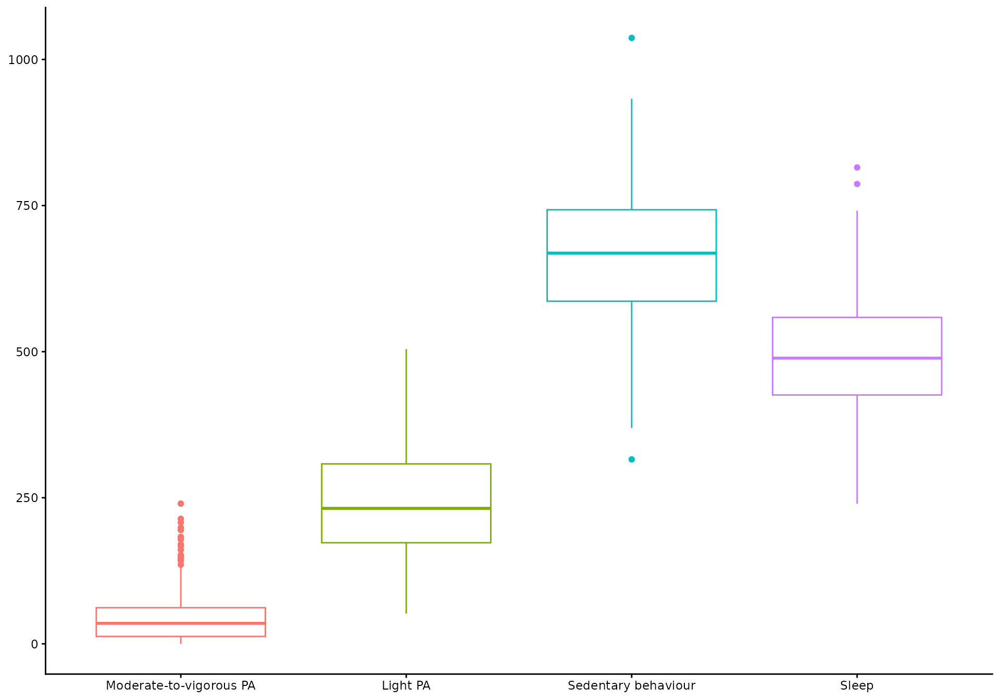
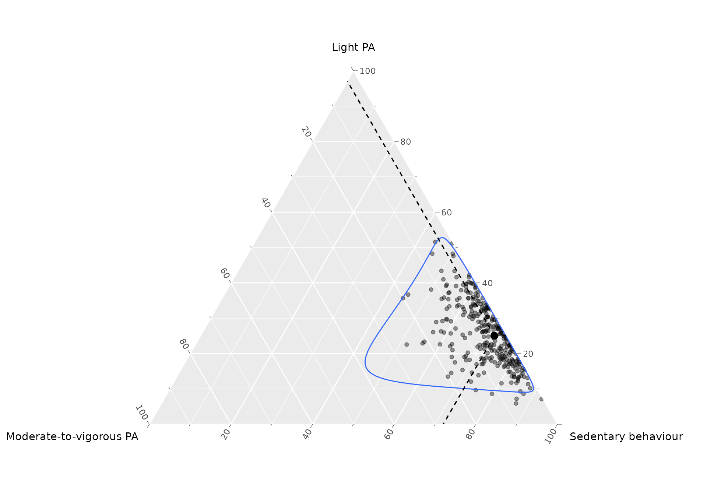
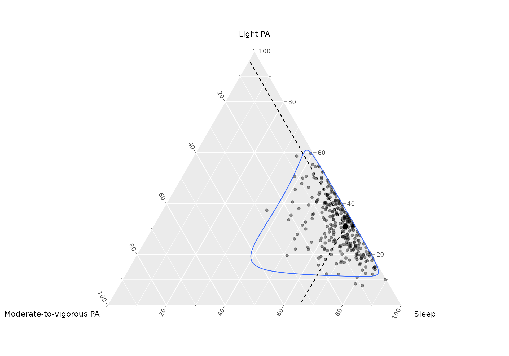
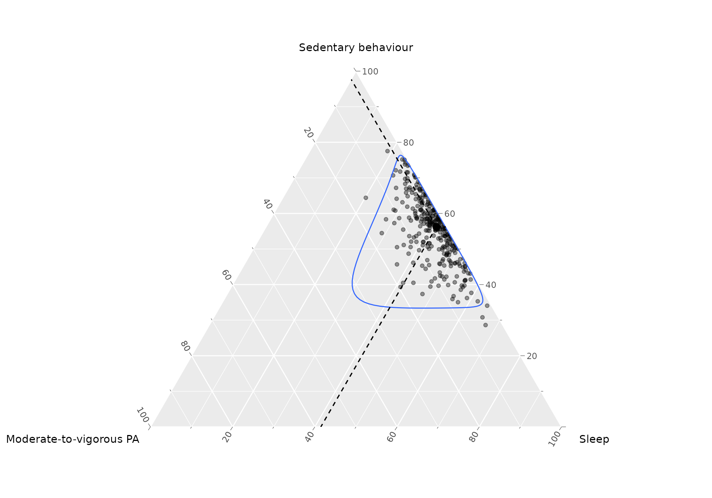
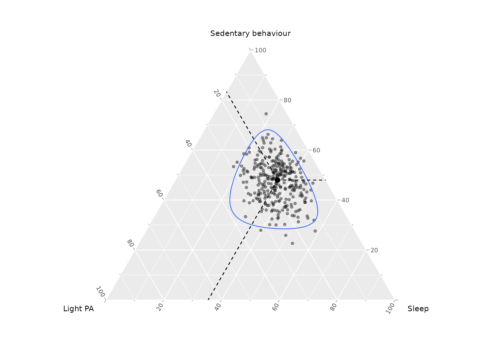
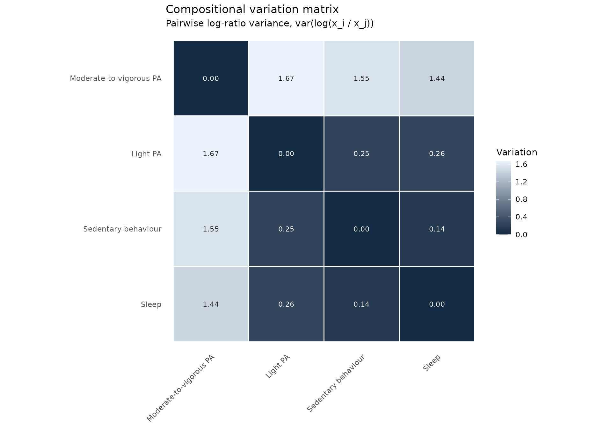
See more in Working with a compositional variable.
Model an outcome from the composition
To model an outcome from the composition, use comp_iv().
To read the fit, use summary().
In comp_iv(), the parts are converted into isometric
log-ratio (ILR) coordinates and the outcome is fitted on those
coordinates. You name the fitting engine with model.
The example here fits "glm", and "lm" works
the same way. For the remaining engines, see
vignette("advanced-models", package = "timecoda").
fit_ob <- comp_iv(comp = cd, outcome = "obesity", model = "glm",
family = "binomial")
fit_ob
#> <timecoda_fit> compositional generalized linear model (binomial)
#> Parts: MVPA, LPA, SB, SPT (total = 1440)
#> Reference composition: MVPA = 28.1, LPA = 235.5, SB = 677.2, SPT = 499.2
#>
#>
#> Call: stats::glm(formula = obesity ~ ilr1 + ilr2 + ilr3, family = "binomial",
#> data = data)
#>
#> Coefficients:
#> (Intercept) ilr1 ilr2 ilr3
#> -3.0796 -0.6916 -0.2635 0.9014
#>
#> Degrees of Freedom: 299 Total (i.e. Null); 296 Residual
#> Null Deviance: 355.8
#> Residual Deviance: 322 AIC: 330
summary(object = fit_ob)
#> <comp_iv> compositional generalized linear model (binomial)
#> Parts: Moderate-to-vigorous PA, Light PA, Sedentary behaviour, Sleep (total = 1440)
#> Omnibus composition test (Wald): chi-squared(3) = 28.922, p = 2.33e-06
#> Convergence: OK
#>
#> Compositional effects (Odds ratio)
#> # A tibble: 5 × 6
#> parameter label estimate conf.low conf.high p.value
#> <chr> <chr> <dbl> <dbl> <dbl> <dbl>
#> 1 Global Composition Global Composition NA NA NA 2.33e-6
#> 2 MVPA vs remaining Moderate-to-vigorous PA 0.501 0.382 0.656 4.89e-7
#> 3 LPA vs remaining Light PA 0.982 0.506 1.91 9.58e-1
#> 4 SB vs remaining Sedentary behaviour 2.98 1.16 7.65 2.34e-2
#> 5 SPT vs remaining Sleep 0.683 0.273 1.71 4.15e-1The summary reports, for each part, a “part vs remaining” odds ratio with its 95% confidence interval. A value below 1, as for moderate-to-vigorous activity, means that a day in which the part is larger relative to the rest is associated with lower odds of obesity. A unit of a log-ratio coordinate has no direct reading in minutes. The reallocation estimates later in this vignette express the same model as minutes moved between parts.
See more in Modelling an outcome from a composition.
Check the fit
To judge whether the model fits, use fit_check(). It
returns a fit_check object with the test statistics of the
residual diagnostics chosen for the model class.
Here these are the simulated quantile residuals of the suggested
package DHARMa.
fit_check(object = fit_ob)
#> Warning in newton(lsp = lsp, X = G$X, y = G$y, Eb = G$Eb, UrS = G$UrS, L = G$L,
#> : Fitting terminated with step failure - check results carefully
#> <fit_check> generalized linear model
#> Backend: dharma
#> Convergence: converged (0 backend warnings)
#>
#> # A tibble: 3 × 4
#> check statistic df p.value
#> <chr> <dbl> <dbl> <dbl>
#> 1 KS uniformity 0.0381 NA 0.777
#> 2 Dispersion 1.01 NA 0.976
#> 3 Outliers 0 NA 1None of the three p-values here is small, and thus we find no evidence of a lack of fit.
See more in Modelling an outcome from a composition.
Predict a reallocation
To express the model’s result as time moved between behaviours, use
predict_realloc(). It compares a reallocated composition
with a reference composition and returns the estimate on the model’s
effect scale, here an odds ratio. To tabulate the estimates, use
summary(). To format them for publication, use
pub_ready().
In a reallocation question, we ask how an outcome differs when a fixed amount of time is moved from one behaviour to another (e.g., 15 minutes from sedentary behaviour to moderate-to-vigorous activity).
That change is estimated for a fixed duration moved between two parts, with the remaining parts held constant, using the compositional isotemporal substitution model.
By default, a reallocation estimate starts from the reference composition, which is the closed geometric mean of the sample in minutes.
predict_realloc(object = fit_ob, from = "SB", to = "MVPA", delta = 15)
#> # A tibble: 1 × 10
#> from to delta estimate std.error df conf.low conf.high statistic
#> <chr> <chr> <dbl> <dbl> <dbl> <dbl> <dbl> <dbl> <dbl>
#> 1 SB MVPA 15 0.758 0.0400 Inf 0.683 0.840 -5.26
#> # ℹ 1 more variable: p.value <dbl>The output shows an odds ratio below 1, so the reallocated day is associated with lower odds of obesity than the reference day.
To get the predicted probability of obesity at each composition in
place of the ratio, set type = "absolute" in
predict_realloc().
predict_realloc(object = fit_ob, from = "SB", to = "MVPA", delta = 15,
type = "absolute")
#> # A tibble: 2 × 8
#> from to delta estimate std.error df conf.low conf.high
#> <chr> <chr> <dbl> <dbl> <dbl> <dbl> <dbl> <dbl>
#> 1 NA NA 0 0.258 0.0271 Inf 0.209 0.315
#> 2 SB MVPA 15 0.209 0.0269 Inf 0.161 0.266To estimate several magnitudes at once, give delta a
vector.
r <- predict_realloc(object = fit_ob, from = "SB", to = "MVPA",
delta = c(10, 20, 30))
summary(object = r)
#> Time-reallocation effects: Odds ratio versus the reference composition
#> 3 reallocations of 10, 20, 30; 95% confidence intervals
#>
#> # A tibble: 3 × 9
#> to from to_label from_label delta estimate conf.low conf.high p.value
#> <chr> <chr> <chr> <chr> <dbl> <dbl> <dbl> <dbl> <dbl>
#> 1 MVPA SB Moderate-to-… Sedentary… 10 0.822 0.764 0.884 1.51e-7
#> 2 MVPA SB Moderate-to-… Sedentary… 20 0.704 0.618 0.802 1.36e-7
#> 3 MVPA SB Moderate-to-… Sedentary… 30 0.620 0.519 0.740 1.25e-7In the publication table of the sweep, each magnitude heads a column holding its odds ratio and confidence interval, and each odds ratio with a p-value below 0.05 is marked with an asterisk.
| Time-reallocation effects | |||||||
| Odds ratio versus the reference composition | |||||||
| Allocated to (+) | Time from (-) |
10
|
20
|
30
|
|||
|---|---|---|---|---|---|---|---|
| Odds ratio | 95% CI | Odds ratio | 95% CI | Odds ratio | 95% CI | ||
| Moderate-to-vigorous PA | Sedentary behaviour | 0.82* | 0.76, 0.88 | 0.70* | 0.62, 0.80 | 0.62* | 0.52, 0.74 |
| * p < 0.05 | |||||||
See more in Predicting time reallocations.
Plot the reallocations
To draw the estimates across magnitudes for every pair of parts, use
plot_realloc(). The figure shows exactly the estimates that
predict_realloc() returns for those magnitudes.
plot_realloc(object = fit_ob, delta_max = 60)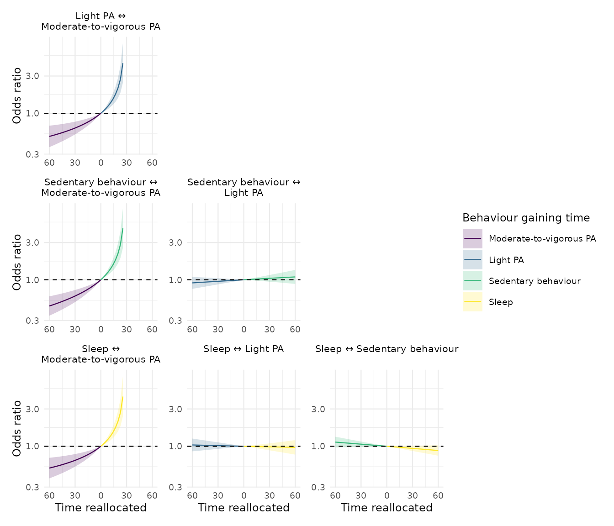
The shaded ribbon is the 95% confidence interval, and the dashed reference line marks an odds ratio of 1.
See more in Predicting time reallocations.
Find the optimal composition
To find the compositions with the best predicted outcome (the
Goldilocks zone), use optimal_composition(). It searches a
grid of compositions inside a region of the sample’s compositions, and
its zone holds the candidates whose predictions rank among the best. To
draw the search, use plot().
Because the model fitted here is linear in the composition, its
predictions keep improving in one direction, and the best days lie on
the edge of the region covered by the search. As the printed note says,
the zone therefore marks where that region ends. A model with curvature
(curvature = TRUE) can hold an optimum inside the region.
For a worked example that fits such a model, see the article on the
Goldilocks zone.
opt <- optimal_composition(object = fit_ob, direction = "min")
#> "obesity" is linear in the composition, so its best predicted outcome lies on
#> the edge of the region.
#> ℹ The zone then marks where the region ends; see on_boundary.
#> ℹ A curved surface can hold an interior optimum: refit with `curvature = TRUE`
#> (or `ilr()^2 + I(ilr()^2)` in a formula).
opt
#> <optimal_comp> Goldilocks-zone search over Moderate-to-vigorous PA, Light PA, Sedentary behaviour, Sleep (total = 1440)
#> Region: per-part box of the mean +/- 3 SD; candidates on multiples of 10
#> Limits: MVPA 0.1 to 180.0, LPA 51.8 to 503.3, SB 315.6 to 1013.4, SPT 239.9 to 809.4
#> 4 of 8 box limits are the observed minimum or maximum of their part (lower: MVPA, LPA, SB, SPT)
#> Scale: Odds ratio versus the reference day
#> Zone rule: obesity, the best 5% of predictions (lower is better)
#> 36,611 candidate compositions inside the region
#> Zone for obesity: 1831 compositions (centre [min; max])
#> Moderate-to-vigorous PA 151.2 [90.0; 170.0]
#> Light PA 262.2 [60.0; 500.0]
#> Sedentary behaviour 367.9 [320.0; 450.0]
#> Sleep 658.7 [400.0; 800.0]
#> A fit linear in the composition has no interior optimum: the zone is the edge of the region in the direction of benefit.
#> Refit with `curvature = TRUE` for a surface that can hold one.
#> Gain from the reference day to the zone centre (95% CI):
#> obesity: Odds ratio 0.187 [0.0842; 0.414], p = 3.65e-05
plot(x = opt)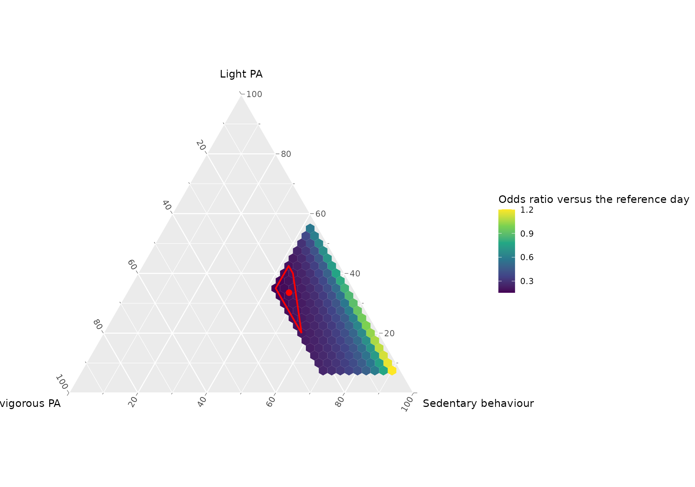
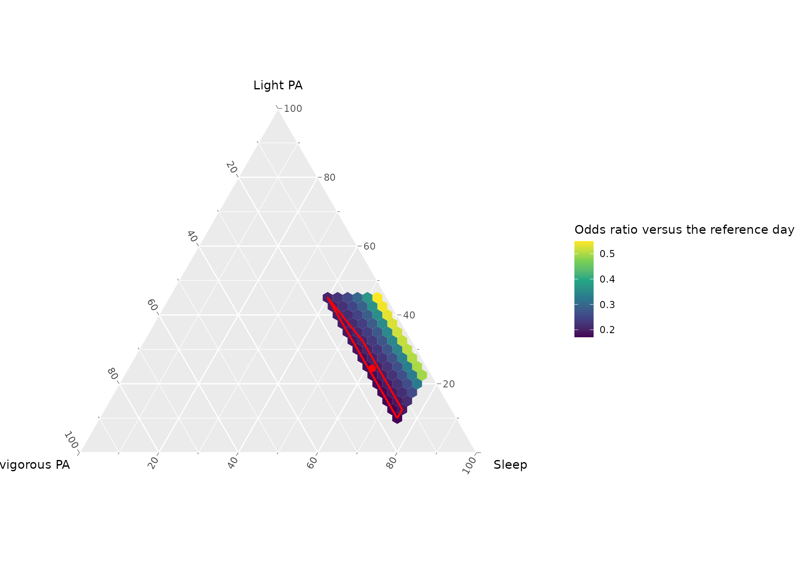
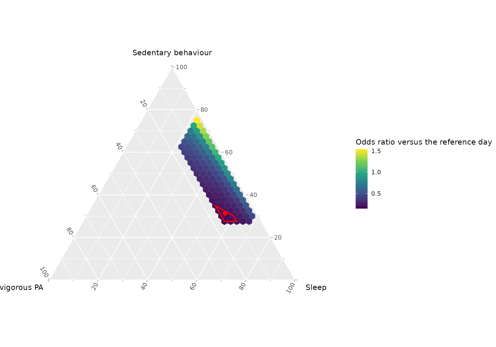
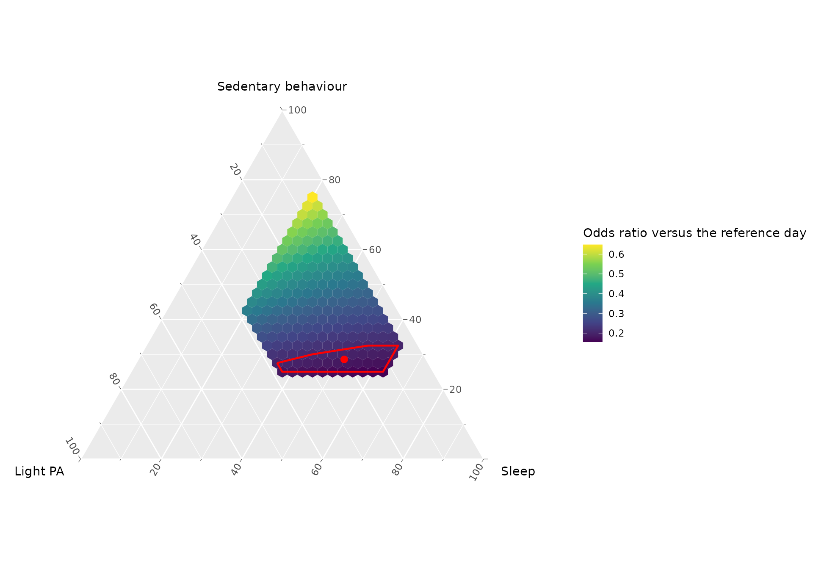
In each panel the fourth part is held at the zone centre, the fill shows the odds ratio against the reference day, the red outline marks the zone and the red point marks its centre.
See more in Finding the Goldilocks zone.
See also
-
vignette("composition-variable", package = "timecoda"): declaring and describing a composition in full. -
vignette("composition-predictor", package = "timecoda"): modelling an outcome from a composition and checking the fit. -
vignette("predicting-reallocations", package = "timecoda"): reallocation estimates, their publication table and the reallocation figure. -
vignette("advanced-models", package = "timecoda"): the other model engines, the formula interface, moderation and the total as a covariate. -
vignette("optimal-composition", package = "timecoda"): the search for the Goldilocks zone, the compositions with the best predicted outcome. - Check the help page of each function for every argument and runnable examples.